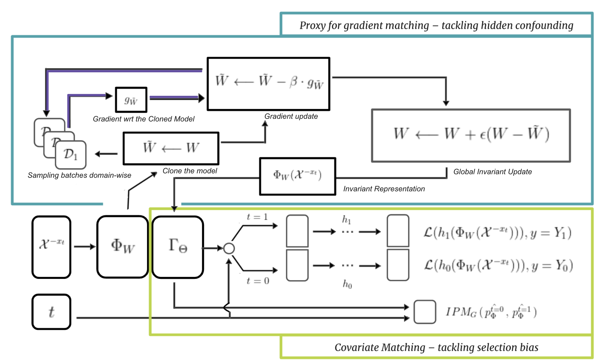
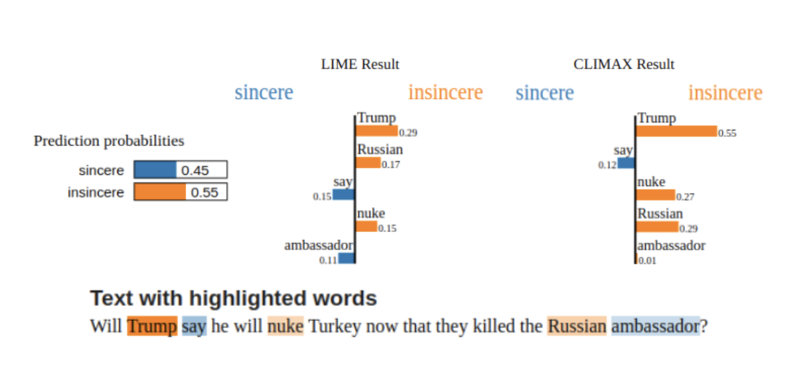
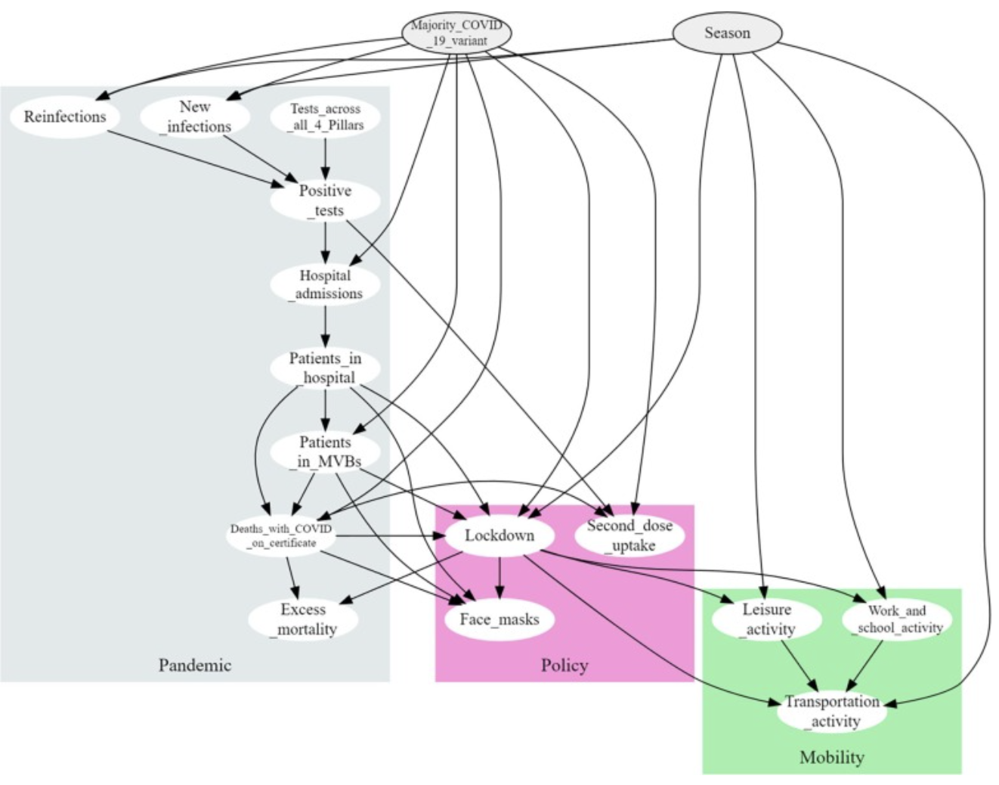
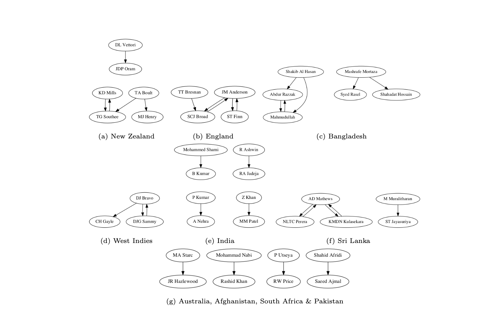

 |
Representation Learning Preserving Ignorability and Covariate Matching for Treatment Effects
Praharsh Nanavati, Ranjitha Prasad and Karthikeyan Shanmugam
Arxiv Preprint
paper /
abstract /
bibtex
We worked on developing neural architectures for Causal Representation Learning to improve covariate matching while preserving ignorability in treatment effect estimation.
@article{nanavati2025representation,
title={Representation Learning Preserving Ignorability and Covariate Matching for Treatment Effects},
author={Nanavati, Praharsh and Prasad, Ranjitha and Shanmugam, Karthikeyan},
journal={arXiv preprint arXiv:2504.20579},
year={2025}
}
|
 |
CLIMAX: An exploration of Classifier-Based Contrastive Explanations
Praharsh Nanavati and Ranjitha Prasad
Accepted at IEEE COGMI 2023
paper /
abstract /
bibtex
We develop a contrastive classifier-based post-hoc explainer, which improves upon the fidelity as well as stability of the widely known method LIME (Locally Interpretable Model Agnostic Explanations) and its newer variants by providing scores about why a point lies in a class and doesn't lie in the remaining classes.
@inproceedings{nanavati2023climax,
title={CLIMAX: An exploration of Classifier-Based Contrastive Explanations},
author={Nanavati, Praharsh and Prasad, Ranjitha},
booktitle={2023 IEEE 5th International Conference on Cognitive Machine Intelligence (CogMI)},
pages={49--58},
year={2023},
organization={IEEE}
}
|
 |
Open problems in causal structure learning: A case study of COVID-19 in the UK
Anthony Constantinou, Neville K. Kitson, Yang Liu, Kiattikun Chobtham, Arian Hashemzadeh Amirkhizi, Praharsh Nanavati, Rendani Mbuvha, Bruno Petrungaro
Published in Elsevier : Expert Systems with Application, 2023
paper /
abstract /
bibtex
We collate data from various public sources and investigate what the various structure learning algorithms learn from these data.
@article{constantinou2023open,
title={Open problems in causal structure learning: A case study of COVID-19 in the UK},
author={Constantinou, Anthony and Kitson, Neville K and Liu, Yang and Chobtham, Kiattikun and Amirkhizi, Arian Hashemzadeh and Nanavati, Praharsh A and Mbuvha, Rendani and Petrungaro, Bruno},
journal={Expert Systems with Applications},
volume={234},
pages={121069},
year={2023},
publisher={Elsevier}
}
|
 |
Bowlership: Examining the Existence of Bowler Synergies in Cricket
Praharsh Nanavati and Amit Nanavati
Accepted at Complex Networks and their Applications, 2023
paper /
abstract /
bibtex
Player synergies are a salient feature of team sports. In the team game of cricket, Batting partnerships
have been analysed extensively but bowling partnerships ("bowlerships"). In this paper, we introduce and precisely define
"bowlerships" and show that they exist.
@inproceedings{nanavati2023bowlership,
title={Bowlership: Examining the Existence of Bowler Synergies in Cricket},
author={Nanavati, Praharsh and Nanavati, Amit Anil},
booktitle={International Conference on Complex Networks and Their Applications},
pages={124--133},
year={2023},
organization={Springer}
}
|